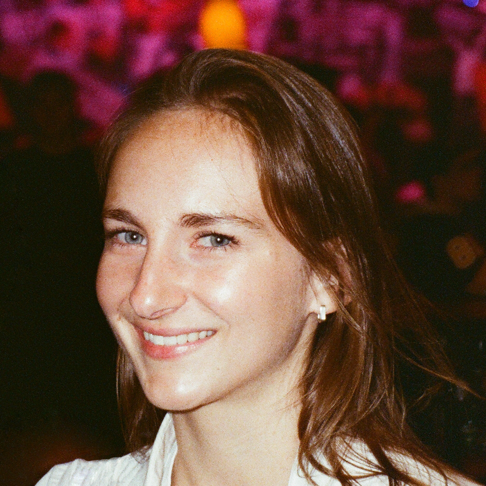

Let's add context.
Hi, I’m Hannah Farnham, a creative based in New York City, originally from North Shore Massachusetts.
I design things, make art, and write code that sometimes works. Whether I'm painting, prototyping, coding, or brainstorming, I love the feeling of chasing an idea until it works.
I’m not too precious about first drafts—and always ready to rethink, rework, or rebuild if it means getting somewhere better. I approach my work with honesty, and I am adaptable when things shift.
I enjoy running, biking, hiking, traveling, eating, painting, knitting, cooking, baking, playing soccer, gardening, good beer, & a homemade halloween costume.
